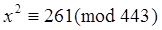
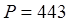
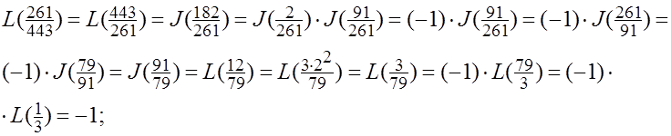

Якоби символи
Айтайлик, x2=a (mod P) таккослама тенглама берилган бўлиб, ЭКУБ(a,P)=1 ва P=p1a1.p2a2.p3a3.....pkak (pi – ток туб сон) бўлсин.
Ушбу холда хисоблашни осонлаштириш учун Якоби символидан фойдаланилади ва бу символ куйидаги:
J(а/Р)=L(а/р1)a1 L(а/р2)a2 ... L(а/рk)ak
тенглик билан аникланади.
Якоби символи куйидаги хоссаларга эга:
1о. Агар a=a1(mod P) бўлса, у холда J(a/P)=J(a1/P) – ўринли бўлади.
2о. J(1/P)=1;
3о. J(-1/P)=(-1)(P-1)/2;
4о. J(2/P)=(-1)(P*P-1)/8;
5о. J((a.b.c.....t)/P)=J(a/P).J(b/P).J(c/P).....J(t/P);
6о. J(a.b2/P)=J(a/P);
7о. Агар P ва q ток ва ўзаро туб сонлар бўлса, J(q/P)=(-1)(P-1)(q-1)/4J(P/q).
Мисол. Куйида келтирилган 
Ечиш: 

Жавоб: Таккослама ечимга эга эмас.
Машклар. Куйидагиларни хисобланг:
1) J(532/2739)=?
2) J(2/15)=?
3) J(152/557)=?
4) J(1234/5981)=?
5) J(1113/15771)=?